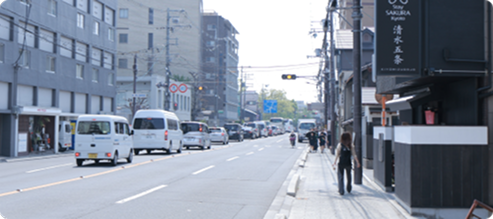

店鋪資訊
Harumi 和服店 (京都總店)
地 址 : 〒605-0862
京都府京都市東山區清水四丁目 182-1
電 話 : 81 75-987-6543
🕘 最晚歸還時間：18:30 前
Harumi 和服店坐擁京都東山區的黃金地理位置
換裝後即可展開最經典的和服漫步路線
鄰近眾多觀光勝地
如世界遺產清水寺、充滿古韻的二年坂/三年坂
以及 IG 人氣打卡點八坂庚申堂等，步行即可輕鬆前往！
距離公車 「清水道」 站或 「五条坂」 站僅需 5 分鐘步行路程
